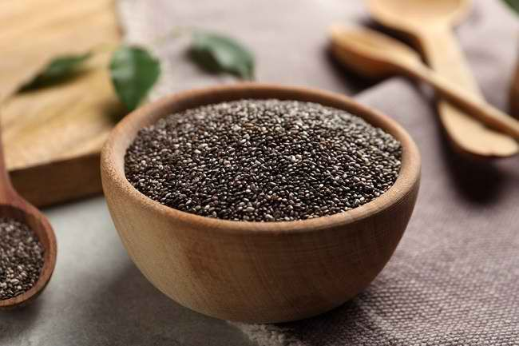

Apakah Kacang Menyebabkan Jerawat? Ini Penjelasannya

“Jangan makan kacang, nanti mukanya jerawatan, lho.” Sering mendengar kalimat tersebut? Kacang sering disebut-sebut sebagai pemicu timbulnya jerawat. Tidak heran, banyak orang terutama para wanita jadi ragu bila ingin makan kacang. Tapi, benarkah makan kacang bisa menyebabkan jerawat? Cek faktanya di sini.
Penyebab munculnya jerawat
Pada dasarnya, jerawat pada wajah timbul ketika folikel rambut tersumbat oleh campuran sel kulit mati, kotoran dan sebum, yaitu zat yang dihasilkan kelenjar minyak yang berfungsi melembapkan kulit. Jerawat juga bisa dipengaruhi oleh hormon. Pada wanita misalnya, jerawat paling banyak muncul menjelang menstruasi dan saat hamil, karena pada masa-masa itulah terjadi perubahan hormon dalam tubuh wanita.
Wajah berjerawat juga paling sering dialami oleh anak-anak remaja. Pasalnya, pada masa pubertas, produksi sebum oleh kelenjar minyak sangat meningkat, bahkan bisa melebih jumlah yang dibutuhkan kulit. Selain hormon, masih banyak faktor-faktor yang menjadi pemicu timbulnya jerawat. Salah satunya adalah jenis makanan yang dikonsumsi.
Hubungan antara kacang dan jerawat
Pada tahun 2005 dan 2006, para ahli dari Harvard School of Public Health di Amerika Serikat melakukan dua penelitian untuk melihat hubungan antara susu dengan timbulnya jerawat. Hasil yang didapatkan dari kedua penelitian tersebut adalah ternyata mengonsumsi susu sapi dapat memicu tumbuhnya jerawat pada wajah orang-orang tersebut. Selain susu, kacang juga dikenal sebagai pemicu jerawat.
Kacang memang mengandung lemak yang tinggi, namun tidak cukup banyak sampai membuat penumpukan dan penyumbatan lemak pada pori-pori kulit hingga menyebabkan jerawat. Penyebab jerawat sebenarnya bukan konsumsi kacang, melainkan karena adanya alergi terhadap kacang.
Untuk mengetahui apakah kamu alergi terhadap kacang, kamu bisa coba menghindari makan kacang selama 1-2 bulan lalu lihat perubahannya. Bila setiap kali makan kacang, wajahmu jadi jerawatan, namun setelah dua bulan tidak makan kacang, wajahmu bersih dan bebas jerawat, maka mungkin kamu punya alergi terhadap kacang.
Kacang justru bermanfaat untuk kecantikan kulit
Jadi, jangan takut makan kacang, karena menurut penelitian yang dilakukan oleh American Academy of Dermatology, jerawat tidak disebabkan karena mengonsumsi cokelat, es krim, ataupun makanan seperti kacang. Beberapa ahli malah percaya bahwa mengonsumsi kacang justru seharusnya dapat mengurangi jerawat, karena makanan tersebut kaya akan asam lemak omega-3 yang memiliki sifat anti-radang.
Beberapa jenis kacang-kacangan seperti kacang almond dan kacang mete juga mengandung asam oksalat yang baik untuk merawat kulit dan mencegah jerawat. Kacang kedelai pun kaya akan asam lemak omega-3 yang baik untuk kecantikan kulit. Kandungan omega-3 dari kacang kedelai telah terbukti mampu melawan inflamasi di tubuh, mencegah kulit kering dan membuat kulit tampak awet muda.
Bila ingin makan kacang, sebaiknya konsumsilah kacang yang dipanggang. Hindari makan kacang yang digoreng karena mengandung kadar lemak jenuh yang tinggi. Hal ini karena minyak yang digunakan untuk menggoreng kacang mengandung lemak jenuh.
Jadi, banyak mengonsumsi gorengan termasuk kacang goreng, dapat memicu timbulnya jerawat pada wajah. Selain itu, kamu juga perlu membatasi mengonsumsi makanan manis dan berkadar gula tinggi, karena konsumsi gula terlalu banyak akan meningkatkan kadar hormon insulin dalam darah dan memicu produksi hormon androgen yang menjadi penyebab jerawat.
INSPIRASI KESEHATAN
-

Viral Kos Wanita Penuh Sampah, Apa Penyebab Hoarding Disorder?
Hoarding disorder biasanya ditunjukan dengan kesulitan membuang barang dan lebih senang menimbunnya hingga menumpuk berantakan. Mengutip Mayo Clinic, orang yang mengidap gangguan ini biasanya merasa tertekan saat harus membuang barang atau sampah tertentu.
-

Kulit Wajah Mengelupas? Ini 5 Hal yang Bisa Jadi Penyebabnya
Sebenarnya kulit wajah mengelupas merupakan reaksi yang wajar terjadi. Ini karena tubuh membuang sel kulit mati dan membuat sel kulit baru terus-menerus.
-

5 Manfaat Chia Seed yang Sayang untuk Dilewatkan
Chia seed mengandung beragam nutrisi, seperti karbohidrat, protein, serat, serta omega-3 dan omega-6. Selain itu, biji-bijian ini juga mengandung sejumlah vitamin dan mineral, seperti vitamin A, vitamin B, kalsium, fosfor, selenium, kalium, zat besi, dan magnesium.
-

Putin Samakan Israel dengan Nazi
Menyamakan tindakan Israel yang secara paksa ingin memblokade Jalur Gaza Palestina seperti blokade Nazi terhadap Leningrad.
-

Kisah Kematian Tragis Mahapatih Majapahit
Mahapatih Majapahit Mpu Nambi tak bisa membayangkan kepulanganya karena ayahnya sakit bakal menjadi...
-
Waspada!! 16 Kali Muntahan Lava Pijar Gunung Merapi
12 jam terakhir terjadi 16 kali guguran lava pijar dari puncak Gunung Merapi dengan arah dan jarak luncur berbeda